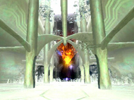
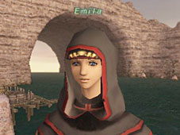

A new chapter has been added to “Chains of Promathia.”
A new quest called “The Fellowship Quest” has been added. Upon completion of this quest, the player will receive an item used to call an NPC.
-The NPC may not be called during NPC escort quests, but may be used along with beastmasters’ pets, summoners’ avatars, and dragoons’ wyverns.
-The NPC may only be called in certain field areas.
-The NPC may fight monsters, gain experience, and level up with the player.
-A player fighting with an NPC fellow will receive only 70% of the usual experience points gained for solo battles.
-The NPC may be called only when there are less than six members in the player’s group. A party may contain a maximum of three NPC fellows, along with the three players who have called them.
-If the NPC’s level exceeds that of the player, its status will be adjusted to match the player’s level.
-The NPC’s equipment will occasionally change after fighting several battles.
-The NPC will leave if the player:
-temporarily logs out to PlayOnline
-logs out
-enters a different area
-is KO’d
-All NPCs in a party will leave if the party attempts to increase its total number of players and NPCs to seven.
Several new quests have been added, including:
-A quest in which the player may acquire headgear that resembles various beastmen
-Rematches with mammets and the Mithran sin hunters
And more!

An NPC that tells the player’s fortune regarding titles and other “elements” has been added in Mhaura.
Character title selection has been changed in the following ways:
-It now costs less gil to change a player’s title. Also, it now costs no gil at all to check the player’s list of available titles.
-The NPC bard that changes player titles will now sing out the player’s title just before changing it.
-After changing the player’s title, the NPC bard will sing out the new title. Nearby PCs will also be able to hear the new title.
-The player will now have the option to have a random title selected for him or her at no cost once each day (Vana'diel time).
-Titles earned by defeating NMs are now available for selection not just at Selbina and Mhaura, but also at Kazham and Rabao.
A chocobo riding game has been added. The player must deliver a chocobo from the chocobo stables where the quest was offered to a designated nation.
Players are now able to talk to an NPC and check the remaining time until they are able to reenter the battlefield for the ENM quests “Pulling the Strings” and “Automaton Assault.”
“Return Ring” and “Homing Ring” have been added to the list of items that may be earned by exchanging conquest points.
If a player has completed the quests to get a pair of Mannequin Pumps or a Minstrel’s Dagger but disposed of the item he earned, the player may now reacquire the item at the same place he attained it.
Mythril Plate Armor has been added to the list of equipment that may be stored as a key item.
A new NPC that will trade items for treasure earned by defeating Lumorian monsters has been added.
Players are now able to earn experience from monsters of a wider level range than previously possible. Experience points earned by defeating “decent challenge” and “easy prey” monsters will also increase in some instances.
Experience chain bonuses in level-restricted areas of Chains of Promathia are now determined by the level of the player while in that area, rather than the player’s actual level.
Monster locations have been adjusted, particularly in Chains of Promathia areas. The following areas will be affected:
Bibiki Bay, Uleguerand Range, Attohwa Chasm, Newton Movalpolos, Promyvion – Holla, Promyvion – Dem, Promyvion – Mea, Promyvion – Vahzl, Lufaise Meadows, Phomiuna Aqueducts, the Sacrarium, Riverne – Site #A01, Riverne – Site #B01, the Garden of Ru’Hmet, Ro’Maeve, the Boyahda Tree, the Den of Rancor, the Shrine of Ru'Avitau, Kuftal Tunnel
The damage and accuracy of a player’s ranged attack are now calculated based on the distance of the player from the monster. This determination varies from weapon to weapon, as does the ideal distance for maximum damage. In addition, the higher the monster’s level is with regard to the player, the less damage will be dealt with a ranged attack.
The player’s enmity now decreases when a shadow image created by Utsusemi is absorbed by an attack.
Weather will no longer have an effect on the distance a player can be detected for monsters that detect based on the use of magic.
Several new notorious monsters have been added.
Creatures summoned by monsters (excluding elementals) have had their names changed to “(Monster’s name)’s Avatar” for consistency.
The strength of monster techniques has been adjusted, particularly in Chains of Promathia areas.
A player who is KO'd, revived, then while still in a weakened state KO'd again will now, after a second reviving, temporarily experience a weakened attack and accuracy loss for magic and ranged attacks.
Before the update, a player who fought a monster without using auto-attack would retain his claim on the monster, even if he was KO’d in battle due to poison, etc. This has been fixed so that when the player dies, the monster becomes unclaimed.
Before the update, a monster that was claimed by a party or alliance would occasionally go unclaimed when magic or a weapon skill was used on the monster as the monster moved out of range before the magic or weapon skill could strike.
Trading a wijnruit and 99 ninja tools to a certain NPC can now earn the player a toolbag. This item may be gathered in stacks of twelve, essentially increasing the player’s ninja tool inventory capacity twelvefold.
New synthesis recipes have been added.
Prices at guilds have been changed to reflect the amount of each item the guild currently has in stock. The cost may rise to a maximum of five times the original price.
Some of the treasure items earned from notorious monsters in the Boyahda Tree have been changed.
The way that the following items are acquired has been changed:
Archer Ring, Leaping Boots, Emperor Hairpin, Peacock Charm
In addition, players may receive an EX/Rare or EX item with the same attributes from the monsters who previously dropped each of the above items.
The effects of the following items have been altered:
Poison Potion, Venom Potion, Paralyze Potion, Sleeping Potion, Silencing Potion, Blinding Potion, Vitriol, Instant Warp, Bastok Mines gate glyph, Bastok Markets gate glyph, Port Bastok gate glyph, Eastern San d'Oria gate glyph, Western San d'Oria gate glyph, Northern San d'Oria gate glyph, Windurst Waters gate glyph, Port Windurst gate glyph, Windurst Woods gate glyph, New Year’s gift, Cantarella, Black Drop, Muting Potion, Invitriol, Warp Cudgel, Trick Staff II, Treat Staff II, Teleport ring: Holla, Teleport ring: Dem, Teleport ring: Mea, Teleport ring: Vahzl, Teleport ring: Yhoat, Teleport ring: Altep, Memento Muffler, Gargoyle Boots, Zoolater Hat, Root Sabots, Aries Mantle, Anubis's Knife, Oscar Scarf, Kinkobo, Carpenter's Belt, Blacksmith's Belt, Goldsmith’s Belt, Weaver’s Belt, Tanner’s Belt, Boneworker’s Belt, Alchemist’s Belt, Culinarian’s Belt, Fisherman’s Belt, Counter Earring, Tactical Ring, Wing Gorget, Healing Feather, Spirit Lantern, Astral Pot, Homing Ring, Return Ring, Absorbing Shield, Tavnazian Ring, Ducal Guard's Ring, Maat's Cap, Kingdom Stables Collar, Republic Stables Medal, Federation Stables Scarf, Cursed Beverage, Cursed Soup
The item “Timepiece” has been added to the list of special items a player may receive 100 days after participating in the Vana’diel Adventurer Recruitment Program.
The following item names have been changed in the English version:
Panzer Mask -> Panther Mask
Panzer Mask +1 -> Panther Mask +1
Amemit Mantle -> Amemet Mantle
Amemit Mantle +1 -> Amemet Mantle +1
The item name “Comet” has been changed to “Little Comet.”
An attribute of the following item has been changed:
Darksteel Pick +1 Delay:312 -> Delay:303
Region Info may now be viewed from all areas.
Messages may no longer be sent using /tell to a player on the user’s blacklist.
Along with the introduction of the Fellowship Quest, players may now combine text commands with <ft> to target their NPC fellows and execute their desired actions. Only the player who called the NPC may target it using <ft>.
The following changes have been made to Ballista.
-If one side of an official match is low on members, entry into that force is now possible even if a match is already underway. In this case, experience may still be gained if certain conditions are met, just as if the player had entered the match from the start. Also, if a player enters during a match, both forces will receive a message notifying them of the new entry.
The player must have the following in order to enter a match already underway:
-A Ballista License
-Enough gil to enter the match
-The minimum level required for the match being played
-A player who has just entered an official match or a match in Diorama Abdhaljs-Ghelsba that was already underway will temporarily be placed under “Preparing for Battle” status.
-Players may now borrow the key items “Ballista Earring” and “Ballista Band” free of charge from the Pursuivant in Ru’Lude Gardens.
Ballista Earring: When in possession of this item, the player will receive information about the next Ballista match and the entry registration time when entering San d’Oria, Bastok, Windurst, or Jeuno from one day prior to the match (Vana’diel time) until the end of the entry period.
Ballista Band: When in possession of this item, the player will be given the choice of whether to keep or throw away the first Petra he quarries.
*Ownership of a Ballista License is not required to borrow the above items.
*The player may return the items simply by speaking to a Pursuivant.
-Players are no longer able to adjust Petra selection settings in Diorama Abdhaljs-Ghelsba. The player will be given the option of what to do with the first Petra quarried only when in possession of the new key item “Ballista Band.”
-The following rules have been changed from special rules to standard rules.
-Camp locations will change when the number of participants in a match is 40 or less.
-The number of Rooks will be reduced to two when there is a significant difference in the number of players on each side.
-Players will now receive experience points for participating in an official match.
-The system of “Open Entry” for official matches, in which all adventurers were allowed to join the force with the smallest number of participants, has been done away with and replaced by a system called “Temporary Entry,” in which players may join a force regardless of allegiance. However, the player's entry is temporary, and similar to Diorama Abdhaljs-Ghelsba's “Auto-Balance” feature, the players may be redistributed for balance when the match begins.
-In Ru'Lude Gardens, the player will be able to view Diorama Abdhaljs-Ghelsba's reservation status. Reservations for the next two days (Earth time) will be shown.
-The NPC Tillecoe will now inform the player of the match’s level restriction when a match at Diorama Abdhaljs-Ghelsba is set to allow general participation.
-Temporary items will now be distributed at the start of official matches held at the Pashhow Marshlands.
-A section of the Ballista rulebook that is read out by the Pursuivant has been changed.
-The rate of success for Foe Lullaby and Horde Lullaby has been lowered for players with bard as a support job.
-A limit has been imposed on the amount of HP that can be absorbed by Bloody Bolts’ HP Drain effect during Ballista.
The following known issues regarding fishing have been addressed:
-Irregular increases or decreases in the HP of a fishing target when the server is experiencing heavy traffic
-The rapid accumulation of fishing "fatigue" under certain conditions